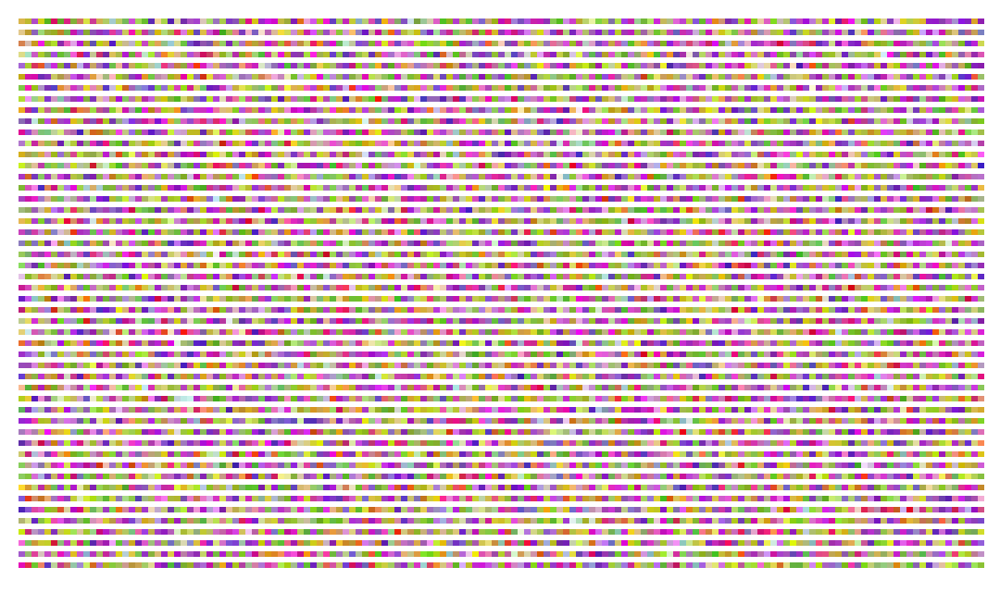
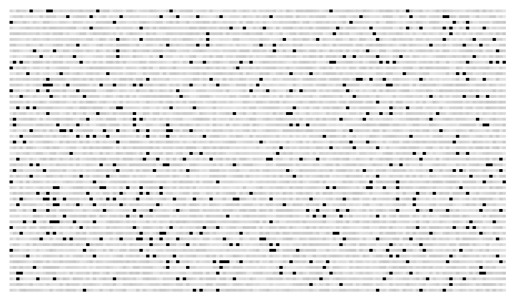

NewsGrid
Supported by a JSK fellowship (Stanford University)
knight.stanford.edu/journalism-challenges/ 
Media organizations require new ways to help digest and navigate major issues beyond a number of links to textual and multimedia content. News consumption should be simpler. I’m developing an approach for understanding and communicating complex topics using human annotation, natural language processing and data visualization of current events. This process should provide an interactive representation of the interconnection of multiple pieces of information.

A representation of topics over time in a corpus of news.
Draft prototyped in Processing using test data.

Example of interaction. Rectangles in black are the same topics.
Draft prototyped in Processing using test data.